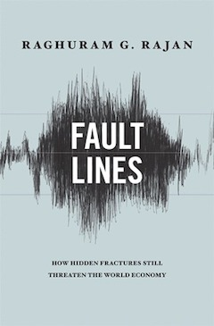
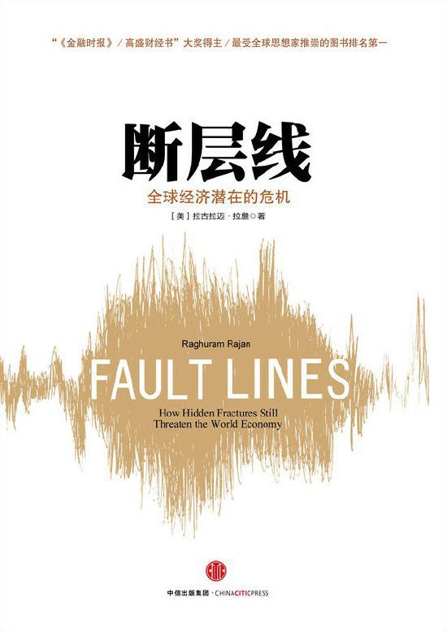

荐书|断层线：全球经济潜在的危机
荐书理由
《断层线：全球经济潜在的危机》是印度经济学家拉古拉姆·古米塔·拉詹2010年出版的一本深入剖析全球经济问题的著作。
本书用地质学中的术语：断层线——由于地壳构造板块相互挤压和冲撞在地壳表面形成的断裂——来比喻当前社会所面临的诸多深层次的社会矛盾。与众多经济学家不同，拉詹在解读金融问题时并没有将视野局限在经济领域和金融市场，而是从社会变迁、政治制度、经济全球化、国际 货币体系等一系列的“断层线”入手，层层推进，并结合对不同体系的微观分析，尝试从系统的角度道出金融危机的来龙去脉和演进根源。
在探讨金融危机的原因及影响时，作者指出金融危机的初始原因是薪酬水平停滞不前和社会不公加剧，而全球贸易不平衡则导致了 全球性的经济衰退。
在讨论尾部风险在金融危机中的作用时，作者指出尾部风险可能引发一系列的连锁反应，这些反应可能会导致整个金融系统的崩溃。
在探讨政府支持对金融机构风险行为的影响时，作者指出政府的支持可以降低尾部风险成本，从而鼓励金融机构去承担更多的风险以推动金融市场的创新和发展。 但是，这种支持也可能导致金融机构倾向于过度承担风险，增加金融市场的系统性风险。
拉詹在分析这一系列问题上的独具慧眼和直击要害，使得本书一经出版便风靡全球，并在当年从众多杰作中脱颖而出，荣获由《金融时报》和麦肯锡联合颁发的“年度最佳商业图书奖”。
当然，对于书中的观点和结论，大家应结合自己的知识和经验进行批判性思考。
总的来说，这本书对于国内的金融从业者，尤其是面临复杂的市场风险的场外衍生品从业者而言，具有十分重要的参考价值和借鉴意义。它不仅深入剖析了尾部风险的本质，启发读者从更宽广的系统性视角去审视金融体系中的尾部风险及其可能引发的连锁反应，还辩证地探讨了薪酬制度、风险管理和监管措施在应对尾部风险中的作用和影响。 书中对尾部风险的多维度剖析和具体建议，无疑为从业者提供了宝贵的指导和实践路径，有利于促进整个金融行业对尾部风险管理策略的持续优化和创新，以适应日益复杂多变的市场环境。
{kind=link}
英文原版 《Fault Lines: How Hidden Fracturs Still Threaten the World Economy》，普林斯顿大学出版社。
{kind=link}
中文版 《断层线：全球经济潜在的危机》，中信出版社。
关于作者
拉古拉姆·古米塔·拉詹（Raghuram Govinda Rajan，1963年2月3日）是一位印度经济学家。他曾是印度财政部首席经济顾问，2003年至2006年间，担任国际货币基金组织（IMF）首席经济学家。 在此之前，他是美国芝加哥大学布斯商学院财政学教授。2013年9月4日，担任印度储备银行第23任总裁。拉詹是最早一批引起人们关注即将到来的金融危机可能性的经济学家之一。
2005年，拉詹在世界上最悠久的中央银行会议之一——杰克逊霍尔会议上提交了一篇题为”金融发展是否使世界风险更大？”的论文。在该论文中，拉詹警告到，由于激励机制的扭曲，导致银行家承担更复杂的风险形式，银行在过去十年中对风险的暴露度增加，金融市场即将步入厄运。 可惜的是，这个警告导致的唯一结果是，拉詹被命名为“厄运预言博士”——他成了金融界的笑柄，直到2008年金融危机爆发。
从业思考
《断层线》在第八章“金融改革：如何让金融灾难不再发生”中提到：
那些放弃尾部风险的人愿意放弃相应的收益，那些涉足尾部风险并低估该风险破坏力的人则将该风险带来的收益看成纯利润，是对他们智慧的回报，而没有看到这些所谓的利润其实只不过是对其高风险的补偿而已。 贩卖风险所带来的收益与这些风险可能带来的预期损失是成比例的（预期地震发生的可能性越大，则相应的保险价格就会越高）， 收益越多，金融公司的销售人员就愿意冒越大的风险（因为当他们的公司最终要面对这些风险所带来的损失时，这些人并不一定还在公司里）。 太多的金融机构急切地涉足一些代价极高的风险领域，因此它们会以过低的价格对这些风险产品进行竞争。这样做的后果就是创造出太多的风险。
笔者作为从量化模型专业人员转型为业务负责人的场外衍生品从业者，在真正进入金融市场直面市场风险之前，本人的关注点主要在金融模型与算法实现上，从未真正切实考虑过市场尾部风险在经典的金融模型中的偏差，也从未感受到过由于相关 从业人员过于追求短期利益而低估甚至忽视尾部风险而导致的扭曲的行业竞争，直至今年年初。从理论到实践，从算法到业务，让我深刻意识到任何模型都并非健全万能，金融从业者须要有更宏观的视野，以更高的政治站位，更有责任地参与到金融活动中。 正如中央金融工作会议一直强调的，要以推进金融高质量发展为主题，全面加强金融监管，有效防范化解金融风险，牢牢守住不发生系统性金融风险的底线。